1pc Multi-Purpose Geometric Drawing Ruler Professional Angle Balance Clear Parallel Rolling Ruler Architect Exam Mathematical Line Circular Drawing Geometry Template School Office Measuring Tool
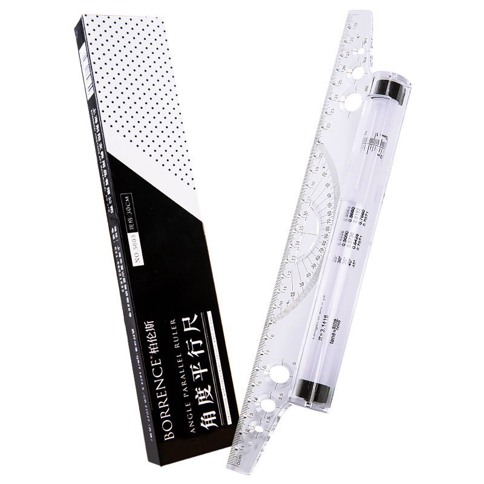
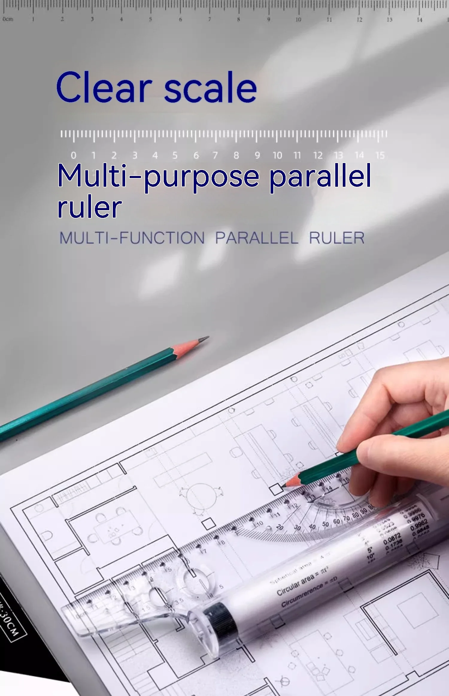
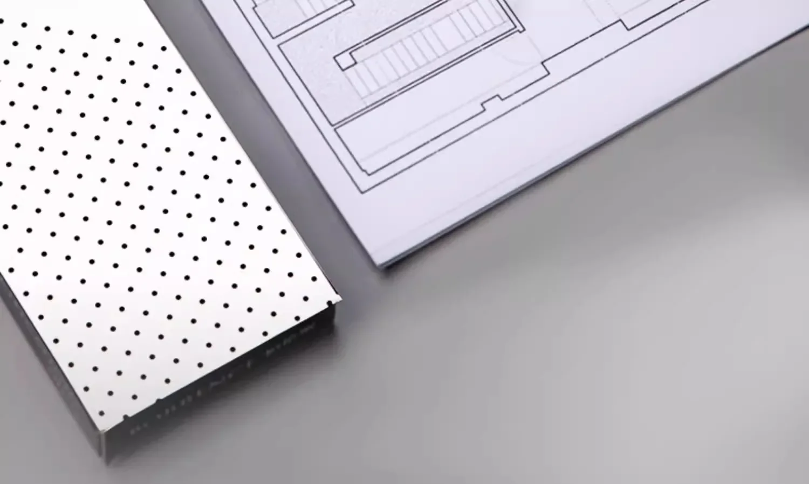
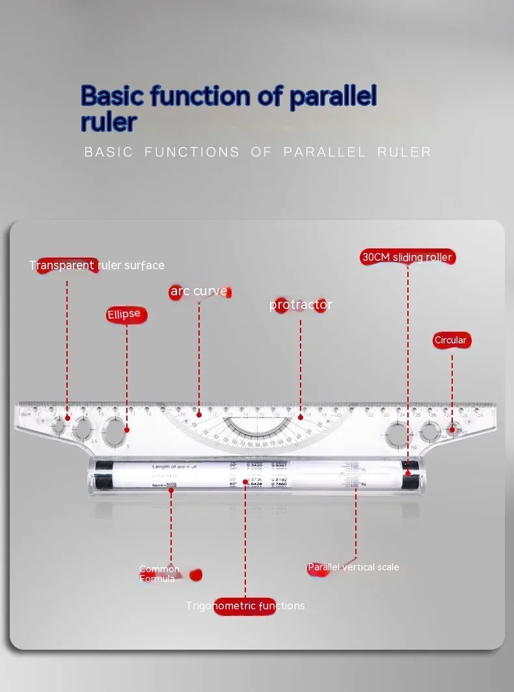
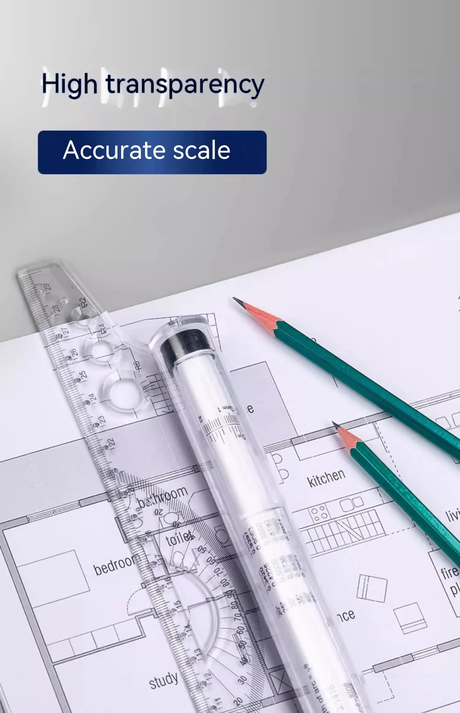
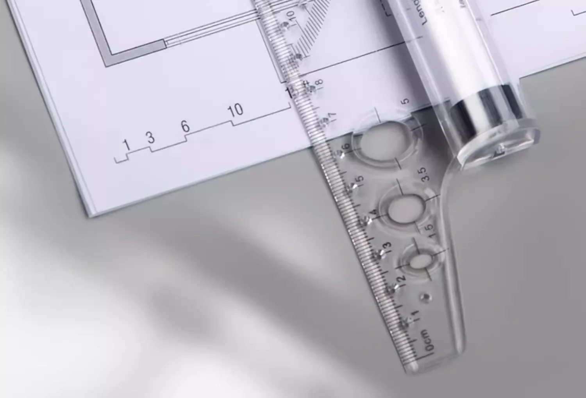
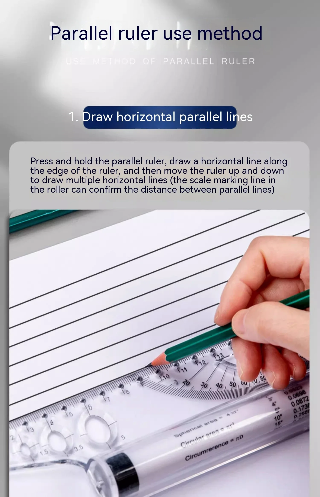
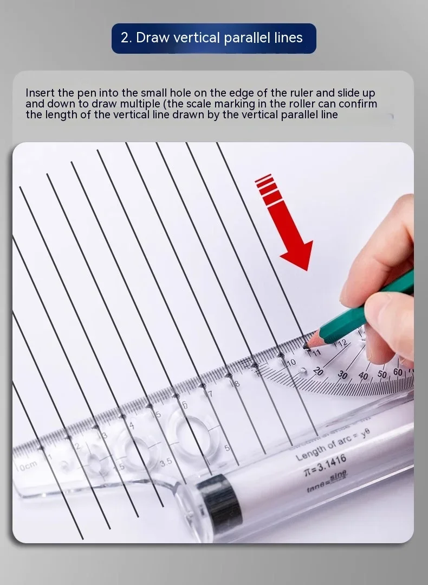
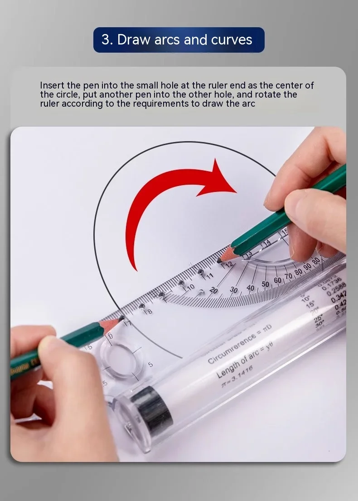
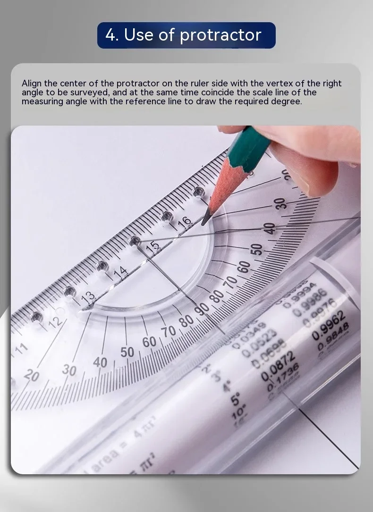
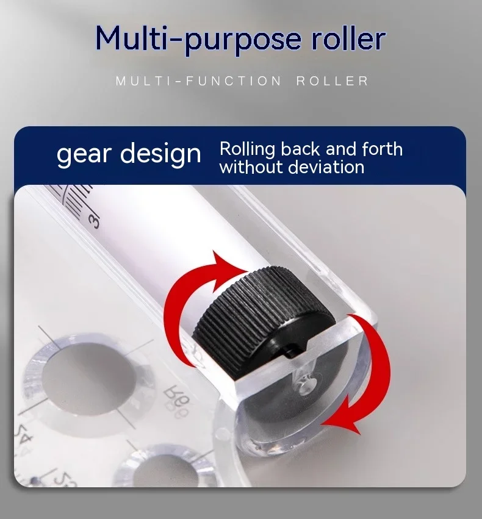
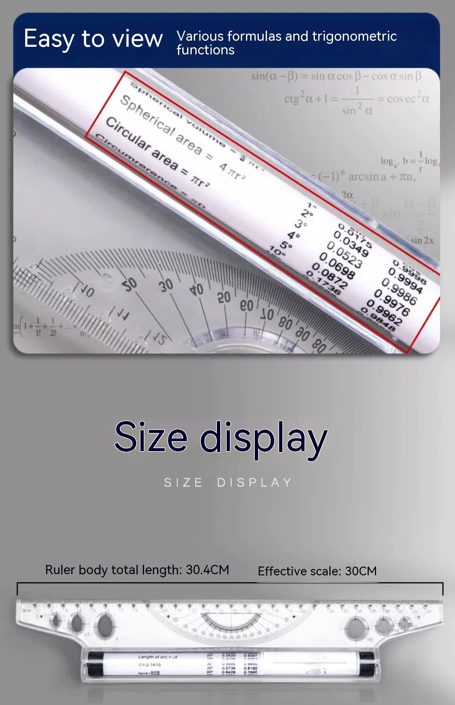
How to use the parallel ruler:1.Drawing horizontal parallel lines
Press and hold the parallel ruler, draw a horizontal line along the edge of the ruler, and then move the ruler up and down, you can draw more than one horizontal line (scale markers in the wheel to confirm the distance between the parallel lines)
2. Drawing vertical parallel lines
Insert the pen into the small hole on the edge of the ruler, slide up and down, you can draw a number of perpendicular parallel lines (scroll wheel within the scale marking can confirm the length of the vertical line drawn)
3. Drawing arcs and curves
Insert the pen into the hole at the end of the ruler as the center of the circle, put another pen into the other hole, rotate the ruler according to the need to draw arcs.
4. Use of protractor
Align the center of the protractor on the side of the ruler with the vertex of the right angle to be measured, and at the same time, coincide the angle scale with the reference line, then you can draw the required degree.